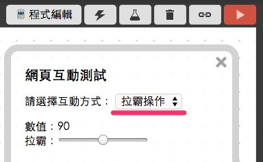

教學範例 16：控制伺服馬達轉動角度
伺服馬達之所以叫做「伺服」馬達，是因為「伺服 servo」表示馬達會依照指示命令動作，由程式要馬達轉幾度，馬達就會轉幾度，但伺服馬達有機械結構上的限制，旋轉的角度是 180 度，但並非完全的 180 度，可能是 1 度到 180 度，或是 -2 度到 177 度都有可能，不過這些誤差都不影響這個範例的實作，這個範例將會介紹如何用 Blockly、HTML 與 javascript 去控制伺服馬達。
範例影片展示
影片對應範例：https://blockly.webduino.io/?page=tutorials/servo-1
接線與實作
由於伺服馬達需要的電流量較大，因此我們必須採用獨立電源，才能供應伺服馬達足夠的電流量 ( 其實也可以用電晶體的方式，但還是用獨立電源比較容易上手 )，伺服馬達具有三條電線。紅色的為正電，深咖啡色是接地 GND，橘色的則是訊號線，我們利用麵包板，將獨立電源、Webduino 開發板和伺服馬達共地 ( GND 接在一起 )，伺服馬達的訊號源接在 11 的腳位即可。
馬克一號接線示意圖：

Fly 接線示意圖：

實際接線照片：


Webduino Blockly 操作解析
打開 Webduino Blockly 編輯工具 ( https://blockly.webduino.io )，因為這個範例會用網頁「拉霸滑桿」來控制伺服馬達旋轉角度，所以要先點選右上方「網頁互動測試」的按鈕，打開內嵌測試的網頁，用下拉選單選擇「拉霸操作」。

把開發板放到編輯畫面裡，填入對應的 Webduino 開發板名稱，開發板內放入伺服馬達積木，名稱設定為 servo，腳位設定為 11。

接著放入「拉霸設定」的積木，裡面可以設定最小值、最大值、每次拖拉的間距以及預設值，因為伺服馬達最多不會超過 180 度，所以最大值和最小值就用 0 到 180 度，設定完成後就放入「顯示數值」以及「伺服馬達旋轉角度」的積木。

完成後，確認開發板上線 ( 點選「檢查連線狀態」查詢 )，點選紅色的執行按鈕，用滑鼠拖動拉霸滑桿，就會看到伺服馬達的旋轉角度跟著變化。( 解答：https://blockly.webduino.io/#-K7B3_Wn1LxGIYcrhejk
範例解析 ( 完整程式碼、檢查連線狀態 )
HTML 的 header 引入 webduino-all.min.js，目的在讓瀏覽器可以支援 WebComponents 以及 Webduino 所有的元件，如果是用 Blockly 編輯工具產生的程式碼，則要額外引入 webduino-blockly.js。
<script src="https://webduino.io/components/webduino-js/dist/webduino-all.min.js"></script>
<script src="https://webduinoio.github.io/webduino-blockly/webduino-blockly.js"></script>
HTML 放入一個 span 來顯示當前角度，並放入一個 type 為 range 的 input，這也就是我們的拉霸滑桿，裡面可以設定最大值 max、最小值 min、間距 step 和預設值 value。
數值：<span id="demo-area-06-input-value">90</span><br>
拉霸：<input type="range" min="0" max="180" step="5" value="90" id="demo-area-06-input">
JavaScript 利用oninput把拉霸改變的的數值 value 輸入給n伺服馬達的 angle，如此一來伺服馬達就會在拉霸改變的當下，一起旋轉角度。
var servo;
boardReady('', function (board) {
board.samplingInterval = 20;
servo = getServo(board, 11);
document.getElementById("demo-area-06-input").setAttribute("min",0);
document.getElementById("demo-area-06-input").setAttribute("max",180);
document.getElementById("demo-area-06-input").setAttribute("step",5);
document.getElementById("demo-area-06-input").setAttribute("value",90);
document.getElementById("demo-area-06-input").oninput = function(_value){
_value = this.value;
document.getElementById("demo-area-06-input-value").innerHTML = _value;
servo.angle = _value;
};
});
以上就是利用網頁拉霸滑桿，來控制伺服馬達的旋轉角度。
完整程式碼：http://bin.webduino.io/xisa/edit?html,css,js,output
解答：https://blockly.webduino.io/#-K7B3_Wn1LxGIYcrhejk
人體紅外線偵測傳感器的延伸教學：
Webduino Blockly 課程 8-2：使用按鈕開關控制伺服馬達
如果您還想了解更多，可以參考：
2. Blockly 教學：https://goo.gl/Y8sRkl
3. 產品總覽：https://webduino.io/buy.html
4. 露天賣場：http://goo.gl/0Dj9ip

Webduino 學習手冊
Webduino 最豐富的教學網站上線囉，本篇文章已經有新的版本，點選『 』前往閱讀吧。如果想看更完整的教材，可以到 Webduino 學習手冊了解更多資訊。
立即前往